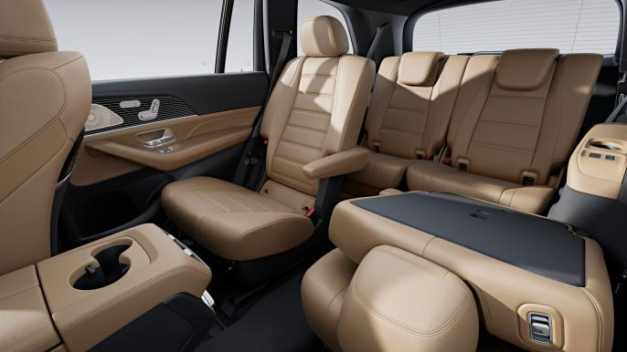
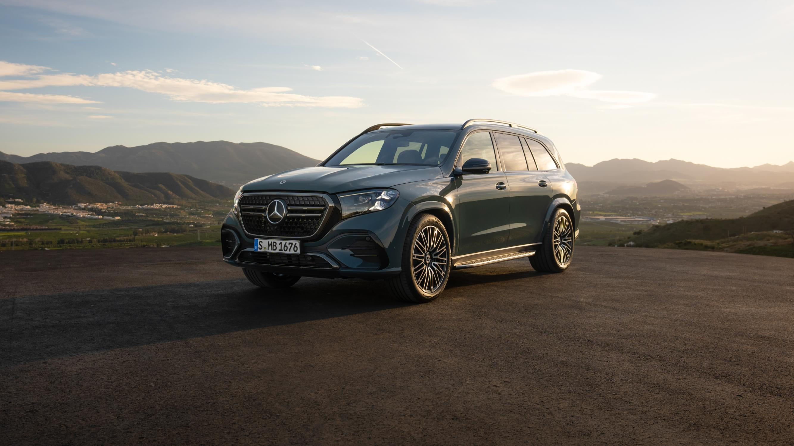
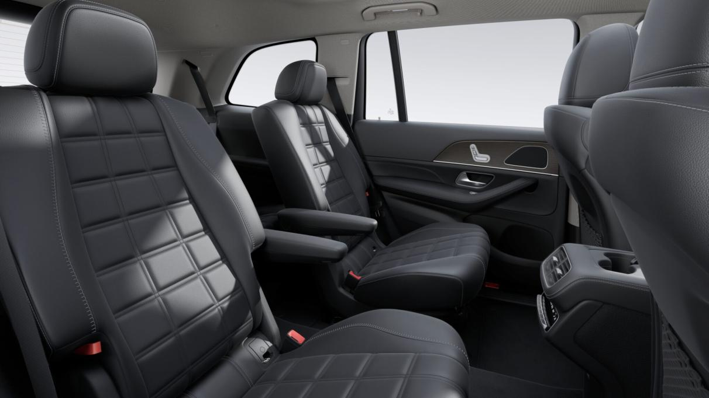

7인승 · 2열 벤치 시트
2열에 세 명까지 나란히 앉을 수 있어 자녀와 부모님을 함께 모시고 이동하기 편합니다. 2열 컴포트 패키지 플러스가 포함됩니다.
온 가족이 함께 타는 실용형넓은 3열 공간과 웅장한 차체. 온 가족이 함께 타는 7인승과 뒷좌석을 VIP처럼 꾸민 6인승 중에서 골라 보세요.
GLS · SUV의 S클래스
정식 MY27 GLS 사진입니다. 아래 작은 사진을 누르면 큰 화면에서 전면 그릴, 별 모양 조명, 실내를 차례로 볼 수 있습니다.
두 가지 모두 3열 좌석이 있지만, 2열 모양과 사람을 태우는 방식이 다릅니다.

2열에 세 명까지 나란히 앉을 수 있어 자녀와 부모님을 함께 모시고 이동하기 편합니다. 2열 컴포트 패키지 플러스가 포함됩니다.
온 가족이 함께 타는 실용형
2열 좌석이 좌우로 나뉘고 가운데 통로가 생깁니다. 넓고 안락한 VIP 좌석이나 의전용 차량을 찾을 때 어울립니다.
2열의 여유와 편안함 우선둘 다 GLS의 넉넉함과 편안함은 그대로입니다. 외관 분위기와 휠 디자인을 골라 보세요.
중후하고 클래식한 벤츠의 고급스러운 분위기를 원하시는 분께 추천합니다.
대형 플래그십에도 세련되고 역동적인 분위기를 원하시는 분께 추천합니다.
큰 차를 더 편하고 조용하게 이용하도록 돕는 기능을 일상적인 말로 설명합니다.
MBUX 슈퍼스크린과 MB.OS는 운전석부터 조수석까지 이어지는 3단 화면입니다. 조수석에서도 전용 화면으로 콘텐츠와 길 안내를 볼 수 있습니다.
에어매틱은 공기 스프링이 바퀴의 충격을 받아 줍니다. 요철과 방지턱을 지날 때 차체가 한결 부드럽고 안정적으로 움직입니다.
삼각별 모양 디지털 라이트와 빛나는 라디에이터 그릴이 어두운 곳에서도 GLS의 웅장한 앞모습을 또렷하게 보여 줍니다.
증강현실 내비게이션과 헤드업 디스플레이가 눈앞에 방향을 보여 줍니다. 복잡한 교차로에서도 다음 회전 방향을 확인하기 쉽습니다.
부메스터® 3D 서라운드 사운드가 차 안 여러 곳의 스피커로 음악을 풍성하고 또렷하게 들려줍니다.
어쿠스틱 컴포트 패키지의 차음 유리가 바람과 도로 소리를 줄여, 차 안에서 편안히 대화하거나 음악을 들을 수 있게 돕습니다.
이 페이지는 2026년 11월 공식 상품 기획 자료에 담긴 MY27 사양과 사진을 쉽게 소개합니다. 실제 국내 판매 사양, 색상 주문 가능 여부, 출시·배정 및 출고 일정은 변동될 수 있어 상담으로 확인해 드립니다. 이 페이지는 실시간 재고 또는 배정 현황을 보여 주지 않습니다.